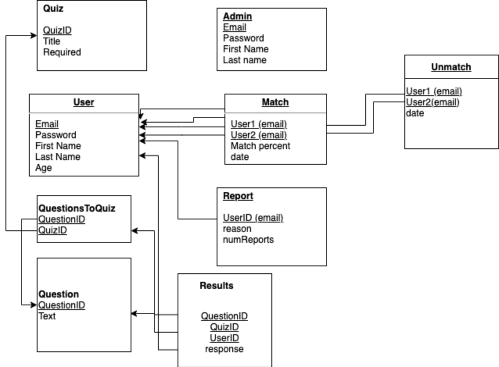
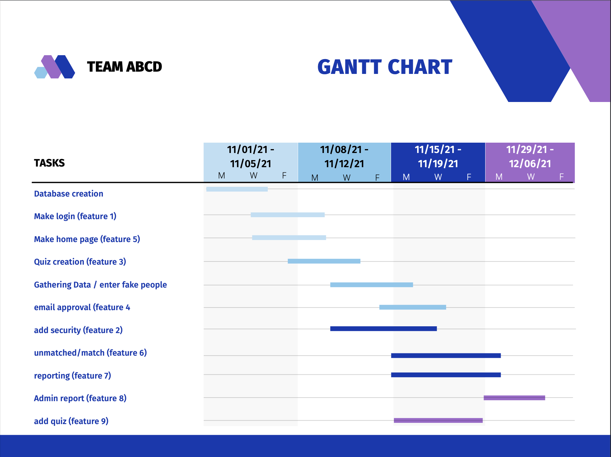

Project Proposal
Section I: Introduction
SPOONS© is a match-making website designed to help its customers find connections based on their FINDMYSPOON© quiz results. Our site stores customer accounts and quiz data, using our matching algorithm to display their matches from most compatible to the least compatible. Users are able to unmatch, report, and receive the contact information for any of their matches. From the administrative perspective, SPOONS© collects data on the number of matches and quiz results--revealing the efficacy of our matching algorithm/quiz.
We are trying to solve common dating/friend-finding app problems--in which, users judge each other on profile pictures and stereotypes without knowing their potential compatibility. A database solution is necessary in order to store large amounts of data for users and quiz results. Further, a database solution helps to mediate both the administrative and user interactions with our site.
Section II: Product Features
- Feature 1: Customers can login to our system with a username and password, which are both encrypted in the database. The username will be an email address, which will be unique. The login form has a checkbox option to “Remember me today.” If this option is checked upon a successful login, the website will remember them for a 24-hour period (without requiring login if they leave and return to the site later). If not checked, the site will only remember them for a 1-hour period.
- Feature 2: To provide added security, we will block out an account after 5 unsuccessful login attempts, after which the user must reset their password by following a link that is emailed to the address stored in the database for the given username. If people forget their password, they can have an email sent to their account that will allow them to update the password.
- Feature 3: Customers are directed to take one or more matching quizzes. The quiz results are used to match them with the most compatible person in the database. Customers need to take at least one quiz before they can be matched. Upon matching, customers are given the email address of their match.
- Feature 4: Before matching with someone, a customer must approve the sharing of their email address. Upon matching, their email will be shared as well as the data from their quizzes. The information will be shared both ways.
- Feature 5: Customers will see a list of all matches on their screen when they login. This list will be ranked from highest match to lowest match. Customers have the option to filter out any matches below a certain percentage, or any matches that were matched before a certain date.
- Feature 6: Customers can select not to be matched with their previous matches a second time when retaking the quizzes. They can also click a “new match button” to get the next most compatible person. If there are no more people compatible in the database they will get a message saying there are no good matches at this time.
- Feature 7: Users also have the option to report users. Users who are reported three times have their accounts deleted. They are removed from the dating website and their email will be unable to recreate an account.
- Feature 8: A company rep can generate a data report on users. The report shows: user, user quality statistics, quizzes taken, number of matches, profiles of their matches, and possibly a satisfaction rating.
- Feature 9: A company rep can add new quizzes to be made available to the customers. When adding the quiz, they must input all the possible quiz results and the compatibility between these quiz results.
Section III: Database Schema

- User: The User relation stores the login information for a user along with their first name, last name, and age. The email they use to log in will be unique to each user. This information will be used to build a secure login and to display user-specific results upon logging in.
- Admin: The Admin relation stores the login information for a member of the admin. The email they use to log in will be unique to each admin. The admin home page will display different information than the user home page. The information in this table will determine which home page to bring them to.
- Question: The Question relation stores a QuestionID and the question text. Each Question can be linked to multiple quizzes.
- Questions to Quiz: The QuestionsToQuiz relation stores a QuestionID and the QuizID. The QuizID is the quiz that contains the specific question. This relation is used to store which questions are on each quiz.
- Results: The Results relation stores the userID, the questionID, a quizID, and the user’s response to a specific question that is on a specific quiz. A user is only allowed to take each quiz one time; if they retake the quiz, their answers will be updated.
- Quiz: The Quiz relation stores the ID for a quiz, the title for the quiz, and whether or not it is a required quiz for a match. This information will be used to link questions to respective quizzes.
- Match: The Match relation stores the IDs for two users who have matched, the strength of the match, and the date they matched. Users will be able to keep track of their top match as well as previous matches.
- Unmatch: The Unmatch relation stores the IDs for two users who cannot be matched together. This feature will be used to prevent people from matching multiple times, or to prevent reported users from matching with a user that reported them.
- Report: The Report relation stores the ID for a user that has been reported along with the number of times they were reported. If a user is reported 3 times by different people, they will be removed from the database and not allowed to rejoin.
Section IV: Project Management
List of Tools:
- Trello: project organization
